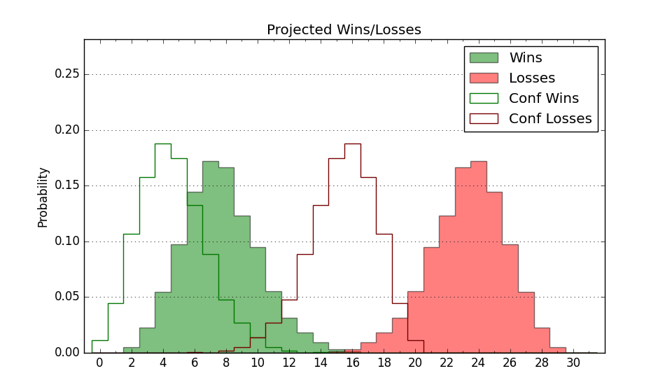

| Home | Game Probabilities | Conferences | Preseason Predictions | Odds Charts | NCAA Tournament |
| City: | Chicago, Illinois | |
| Conference: | Big East (1st)
| |
| Record: | 0-0 (Conf) 1-6 (Overall) | |
| Ratings: | Comp.: 2.1 (144th) Net: 0.3 (174th) Off: 100.5 (213th) Def: 100.2 (138th) SoR: 0.0 (267th) |
| Remaining | ||||||
|---|---|---|---|---|---|---|
| Date | Opponent | Win Prob | Pred. | |||
| 12/6 | @ Texas A&M (12) | 4.6% | L 63-84 | |||
| 12/9 | Louisville (242) | 81.4% | W 78-67 | |||
| 12/16 | Northwestern (30) | 27.6% | L 65-71 | |||
| 12/23 | Villanova (34) | 28.3% | L 67-73 | |||
| 12/30 | Chicago St. (339) | 93.2% | W 79-61 | |||
| 1/2 | @ Connecticut (10) | 4.4% | L 62-84 | |||
| 1/6 | @ Georgetown (198) | 46.8% | L 74-75 | |||
| 1/9 | Creighton (5) | 12.3% | L 66-80 | |||
| 1/12 | @ Villanova (34) | 10.4% | L 62-77 | |||
| 1/17 | Providence (50) | 33.5% | L 68-73 | |||
| 1/20 | @ Butler (44) | 12.0% | L 66-80 | |||
| 1/24 | Marquette (7) | 13.3% | L 67-80 | |||
| 1/27 | @ Creighton (5) | 4.0% | L 62-84 | |||
| 1/30 | @ Seton Hall (65) | 16.6% | L 64-75 | |||
| 2/3 | Xavier (46) | 32.8% | L 71-76 | |||
| 2/6 | @ St. John's (66) | 16.6% | L 70-82 | |||
| 2/14 | Connecticut (10) | 13.6% | L 67-79 | |||
| 2/17 | @ Providence (50) | 12.9% | L 64-78 | |||
| 2/21 | @ Marquette (7) | 4.3% | L 62-84 | |||
| 2/24 | Georgetown (198) | 75.0% | W 78-70 | |||
| 2/28 | @ Xavier (46) | 12.5% | L 66-80 | |||
| 3/2 | Butler (44) | 31.8% | L 70-76 | |||
| 3/5 | St. John's (66) | 40.5% | L 75-78 | |||
| 3/9 | @ Seton Hall (65) | 16.6% | L 64-75 | |||
| Previous | Game Score | |||||
| Date | Opponent | Win Prob | Result | Off | Def | Net |
| 11/7 | Fort Wayne (151) | 66.2% | L 74-82 | -13.3 | -5.6 | -18.9 |
| 11/11 | Long Beach St. (139) | 62.4% | L 73-77 | -6.4 | -3.3 | -9.7 |
| 11/14 | South Dakota (270) | 85.4% | W 72-60 | -4.5 | 11.2 | 6.7 |
| 11/17 | (N) South Carolina (57) | 23.8% | L 68-73 | -8.3 | 13.9 | 5.6 |
| 11/19 | (N) San Francisco (62) | 24.9% | L 54-70 | -8.8 | -0.4 | -9.2 |
| 11/25 | Northern Illinois (120) | 59.3% | L 79-89 | -3.3 | -20.4 | -23.7 |
| 12/1 | Iowa St. (14) | 16.2% | L 80-99 | 13.1 | -16.9 | -3.8 |
| Stats & Trends | |||||
|---|---|---|---|---|---|
| Current | Day | Week | Month | Season | |
| Composite | 2.1 | +0.8 | -0.1 | -2.4 | -2.4 |
| Comp Rank | 144 | +5 | -6 | -41 | -41 |
| Net Efficiency | 0.3 | +1.5 | +0.4 | -- | -- |
| Net Rank | 174 | +14 | -10 | -- | -- |
| Off Efficiency | 100.5 | +0.6 | +1.3 | -- | -- |
| Off Rank | 213 | +10 | +24 | -- | -- |
| Def Efficiency | 100.2 | +0.9 | -0.9 | -- | -- |
| Def Rank | 138 | +15 | -5 | -- | -- |
| SoS Rank | 114 | +22 | +97 | -- | -- |
| Exp. Wins | 7.7 | +0.4 | -0.1 | -4.5 | -4.5 |
| Exp. Conf Wins | 4.6 | +0.4 | +0.1 | -1.1 | -1.1 |
| Conf Champ Prob | 0.0 | +0.0 | +0.0 | -0.1 | -0.1 |

| Advanced Stats | ||
|---|---|---|
| Stat | Value | Rank |
| Off Eff FG % | 0.527 | 94 |
| Off Ast Ratio | 0.159 | 79 |
| Off ORB% | 0.191 | 345 |
| Off TO Rate | 0.167 | 269 |
| Off FT Ratio | 0.371 | 114 |
| Def Eff FG % | 0.469 | 93 |
| Def Ast Ratio | 0.131 | 142 |
| Def ORB% | 0.295 | 239 |
| Def TO Rate | 0.159 | 141 |
| Def FT Ratio | 0.390 | 271 |